|
Hanqi Xiao I am a research assistant at MURGe-Lab under Professor Mohit Bansal, and a undergraduate at UNC Chapel Hill, class of 2026. |
{kind=link}
ResearchI'm interested in understanding generalizable principles/insights to improve compression, robustness/interpretability, and embedded applications. I have recently been working on LLM quantization and predictability to promote efficiency and robustness. |
|
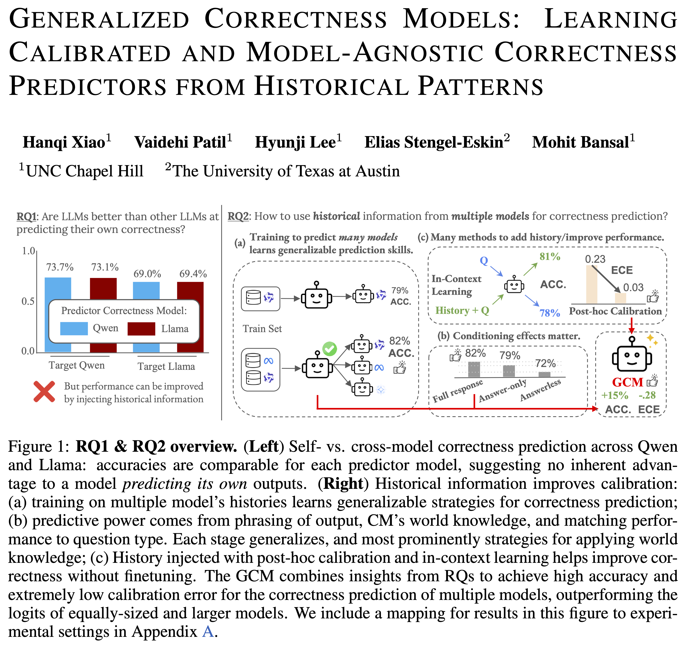
|
Generalized Correctness Models: Learning Calibrated and Model-Agnostic Predictors from Historical Patterns
Hanqi Xiao, Vaidehi Patil, Hyunji Lee, Elias Stengel-Eskin, Mohit Bansal arXiv preprint, 2025 Link We propose Generalized Correctness Models (GCMs) trained on multiple models’ historical correctness data, to yield calibrated, model-agnostic predictors of answer reliability. Unlike prior self-knowledge approaches, GCMs leverage patterns from multiple models and outperform individual models’ confidence estimates in selective prediction and calibration tasks. |
|
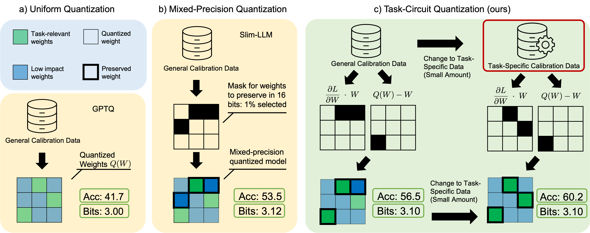
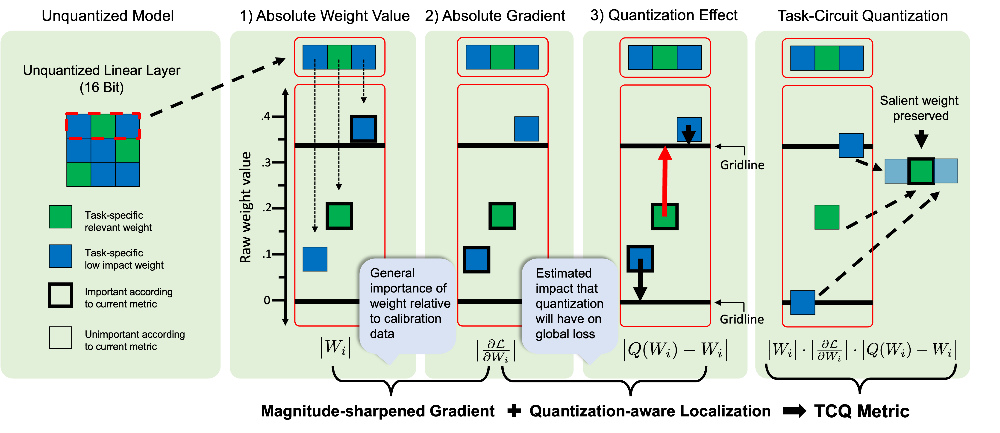
|
Task-Circuit Quantization: Leveraging Knowledge
Localization and Interpretability for Compression
Hanqi Xiao, Yi-Lin Sung, Elias Stengel-Eskin, Mohit Bansal, COLM, 2025 Link Using interpretability informed saliency scores based on task-specific information to localize important weights to preserve during model compression, yielding improvements for both general and task specific quantization |

|
Developing a Prototype for the Systems Literature Analysis Engine (SLAE)
Hanqi Xiao, Robert Peters, Davyd Voloshyn, Jonathan Vester, Thomas Bland, Kristen Hassmiller-Lich 46th Annual Meeting of the Society for Medical Decision Making, 2024 Link Poster presentation on developing a prototype for the Systems Literature Analysis Engine, focusing on automating the connection of scientific evidence to inform causal loop diagrams on 'wicked' problems and systems. |
|
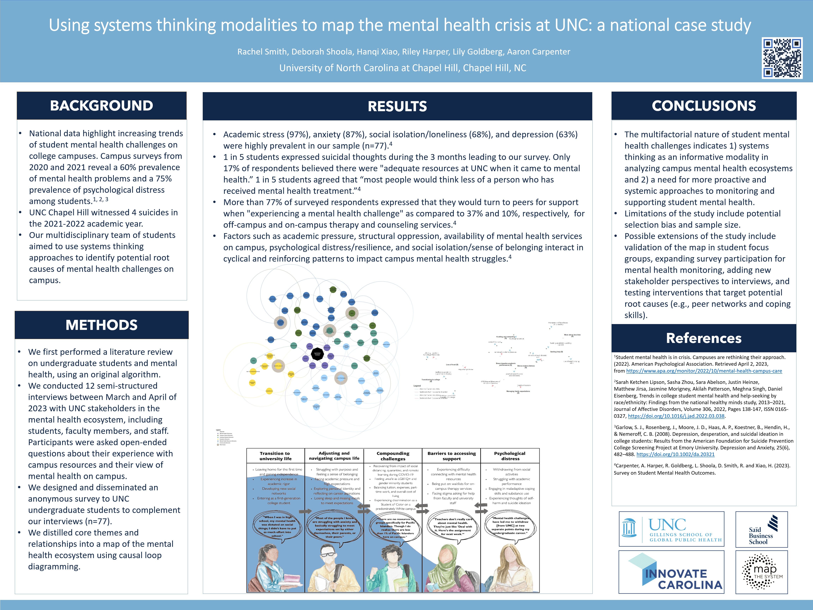
|
Using systems thinking modalities to map the mental health crisis at UNC: a national case study
Aaron Carpenter, Hanqi Xiao, Lily Goldberg, Rachel Smith, Riley Harper, Deborah Shoola APHA 2023 Annual Meeting and Expo, 2023 Link We investigate the causal elements that influence mental health trends among university students using systems thinking. Our research includes a literature review of 1000+ articles (aided by a custom programatic search and categorization system we develop), student surveys (n=77), and interviews with students, staff, and faculty to identify intervention models and leverage points for combating the suicide crisis on campus. Map the System 2023 global finalist project (Skoll Centre, Oxford University). |
CommunityI previously founded and led AI@UNC, the undergraduate student organization for AI at UNC-Chapel Hill. We hosted 150+ members in good standing and supported 14 completed projects. |
Gallery
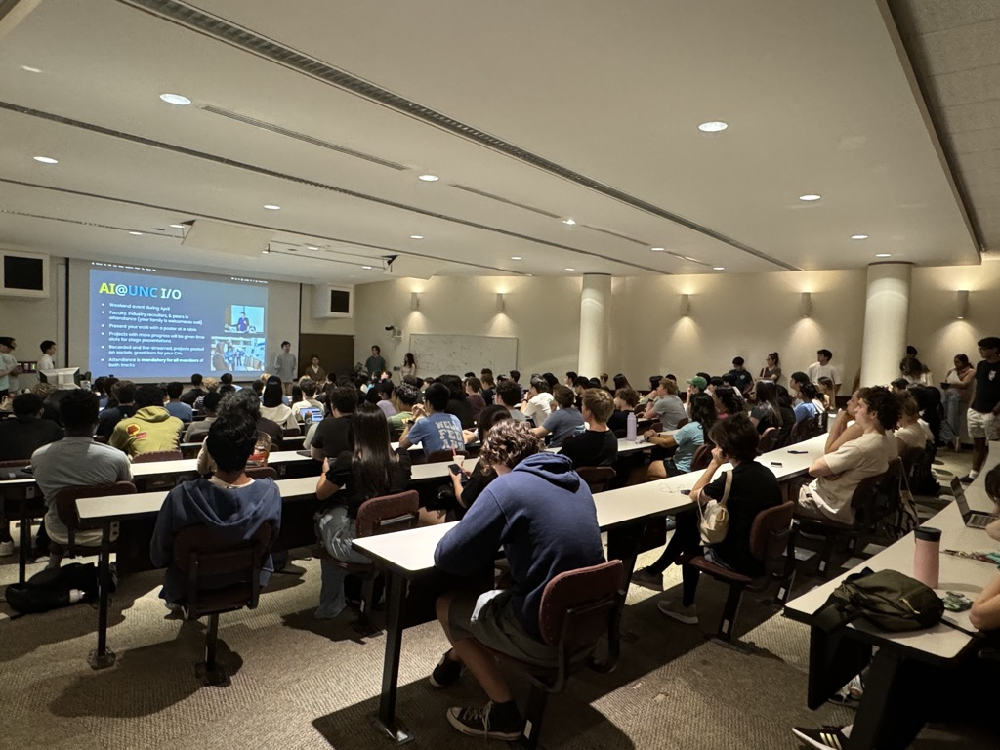
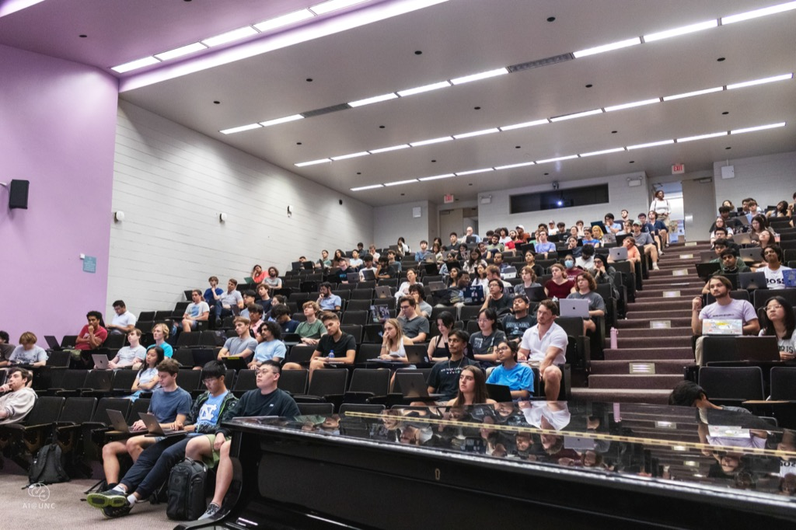
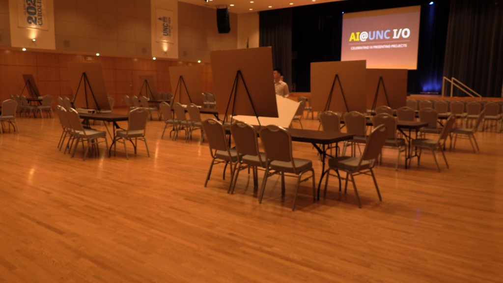
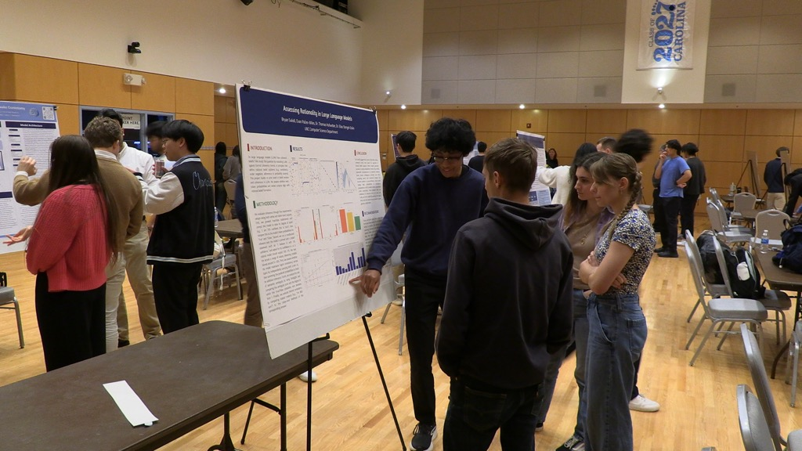
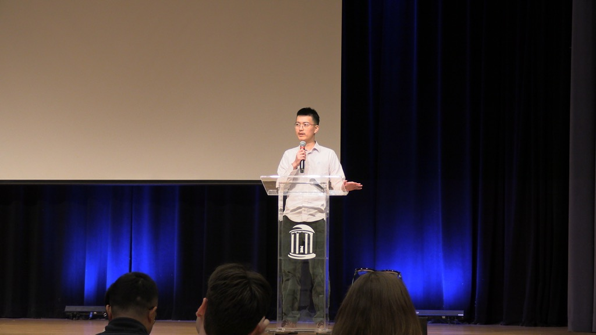
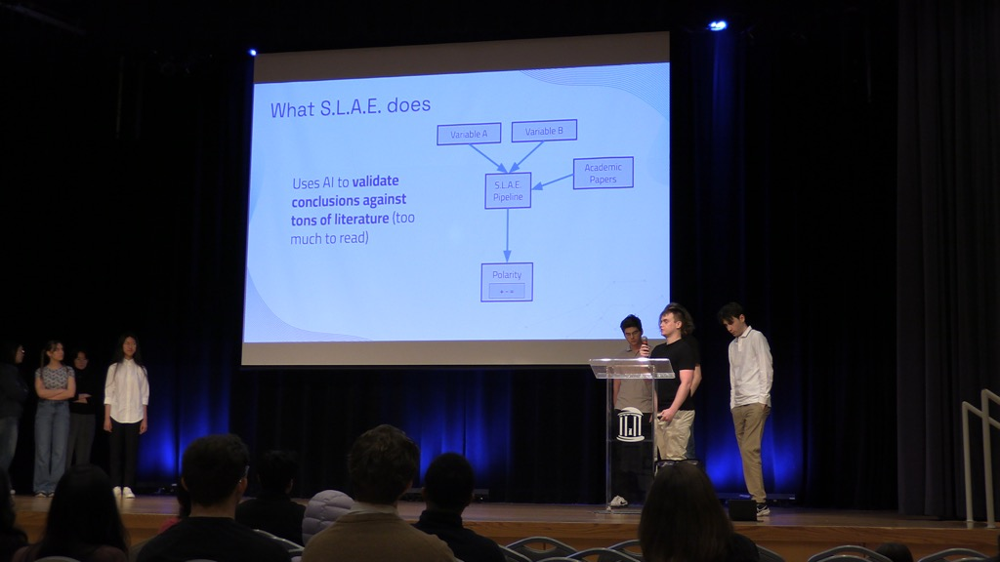
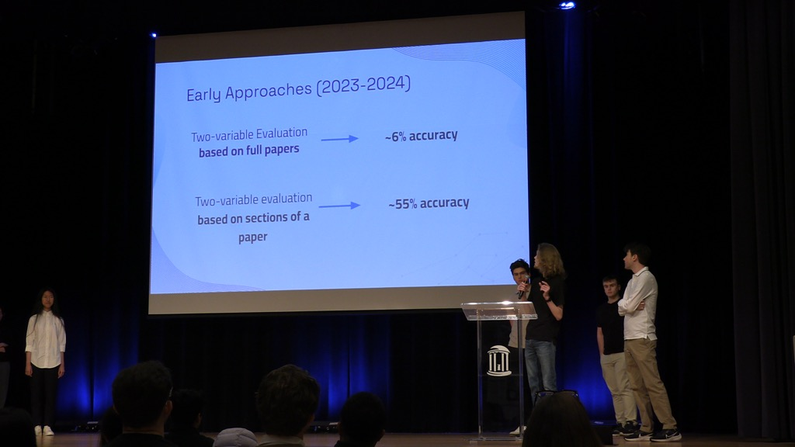
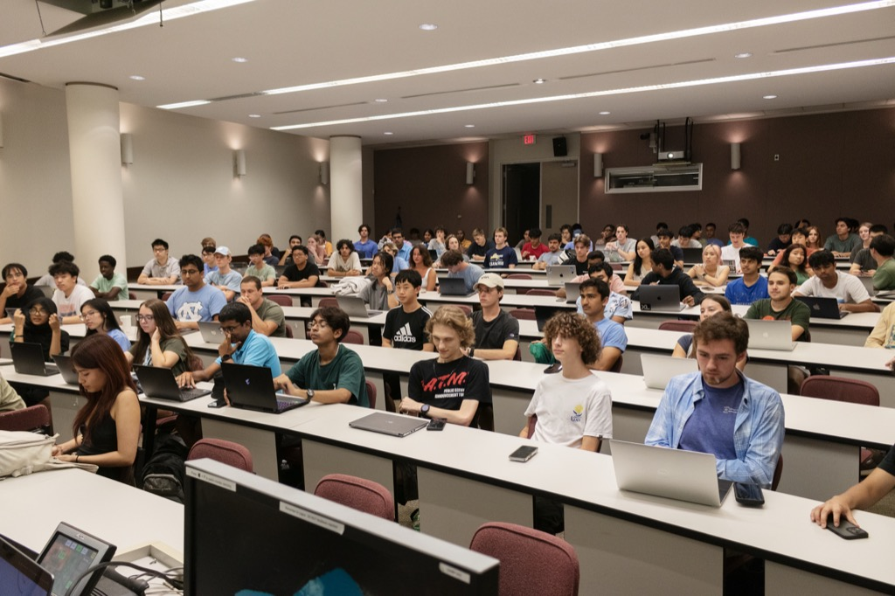
|
|
Website source borrowed from here. |